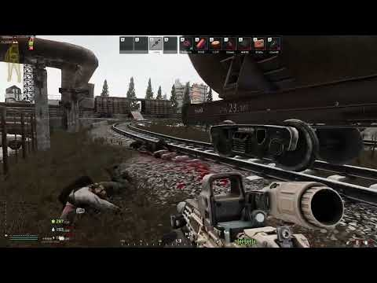

APEX/Titanfall theme resource pack(AIO)
- Downloads
- 1,121
- Favourites
- 0
This is not precisely a mod, but rather a combined resource pack of several mods. You’ll need to have these mods installed beforehand.
Dependencies(Mandatory For whole pack to work):
Amands Hitmarker by Amands2Mello (3.9 ver can only be found on github here)(Updated to 3.10 ver)
Environment replacer by kmyuhkyuk (Updated to 3.10 ver)
Dynamic Soundtrack & Custom Menu Music by Bobby Renzobbi
※Special thanks to Marine for allowing the inclusion of his collection.
Installation Steps:
1. After installing the required mods, download this pack.
2. Unzip and move it to the SPT main folder. This will place all the files into their corresponding directories.
3. Open the launcher, go to Settings, and select Clean Temp Files.
4. Done!
How to Remove or Change Specific Features:
If you don’t like certain changes made by the pack and want to remove or modify them, here’s what the pack alters and where to find those files:
1. Main menu screen(23 in total, randomly play, both APEX and Titanfall scenes)
(BepInEx\plugins\kmyuhkyuk-EnvironmentReplace\environment)
2. Main menu music(74 in total, randomly play)
(BepInEx\plugins\BobbysMusicPlayer\CustomMenuMusic\sounds)
3. Quest-related SFX, trade accepting SFX
(BepInEx\plugins\BobbysMusicPlayer\UISounds)
4. Extracting/Death music
(BepInEx\plugins\BobbysMusicPlayer\DeathMusic)
(BepInEx\plugins\BobbysMusicPlayer\ExtractMusic)
5. Combat music(20 in total, randomly play)
(BepInEx\plugins\BobbysMusicPlayer\Soundtrack\combat_music) — Recommended to set combat music volume at 50%.
6. Killing/hitting SFX
(BepInEx\Plugins\Hitmarker\sounds)
7. Kill icon
(BepInEx\Plugins\Hitmarker\ranks) — Use the Rank option in Hitmarker config.
8. Armor/other icons
(BepInEx\Plugins\Hitmarker\images)
Updates related:
This pack will be updated if the dependency mods change folder structure, add new functions, or add/change SFX/music/background.
It should work regardless of the SPT version, as long as the dependency mods don’t change their folder structure or coding.
Source
https://www.youtube.com/playlist?list=PLznfpKBP6XSu2aOqpt2eoL6ArA7BavvgS
https://youtube.com/playlist?list=PL9s1kLVoKRu6hJc6J-qA9bXbc0oAvh_cF&si=lqzK9KtiTIKiqBxV
https://www.youtube.com/playlist?list=PL7sYszxJYj1uL507QSL5tp9Us3EJhpRYF
https://www.youtube.com/playlist?list=PLvhaFnyJugIkcYcusJC5MvreO6YVnaFLa
Gameplay footage

**Please leave any suggestion/question in the comments section, enjoy!
Version
1.0.3
!!!!Highly recommend remove previous files if you are upgrading!!!
**!!!This version using some new file names with background video!!!!
What’s New:
※Hand-picked combat music from TF1/TF2 (as there are no suitable APEX music, in my opinion).
※A few new extraction and death music tracks.
※Edited the main menu replacer video to better fit the Tarkov style and be more eye-friendly, also some newer ones.
※Removed the loading screen replacer because I can’t for the love of god get it to work(works like 1/20) .
★Warning★
Some users may experience a white screen background on the main menu, can’t reproduce the issue on my end.
The best solution for now is to remove the video replacer. I’ll update the pack if I can address this issue in anyway.
Old version were deleted to save spce on my GD